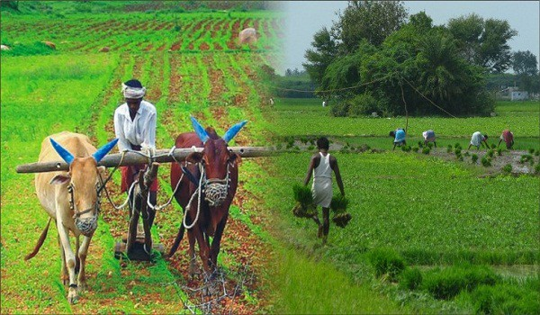
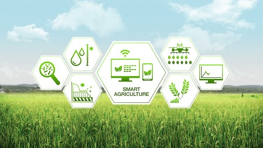

Petani Muda Sukses di Era Milenial Saat Ini Sangant Menjanjikan
Kamis, 15 Oktober 2020Cara kerja pestisida nabati sangant spesifik yaitu: (1) meruka perkembangan telur, larva, dan pupa. (2) menghambat ...
Dengan meningkatnya adopsi Internet of Things (IoT), perangkat yang terhubung dapat menem bus setiap aspek kehidu pan kita, mulai dari kesehatan dan kebuga ran, home automation,otomotif dan logistik, hingga smart cities dan industri IoT.
Dengan demikian, IoT dapat menghubungkan setiap perangkat perangkat yang terhubung, dan otomatisasi akan menemukan penerapannya dalam pertanian dan dengan demikian dapat meningkatkan banyak aspek praktik pertanian. Bagaimana mungkin saat ini petani masih mengandalkan kuda dan bajak ketika mobil yang dikendarai sendiri dan realitas virtual bukan lagi fantasi fiksi tetapi menjadi kebutuhan sehari-hari?
Sektor pertanian telah memiliki sejumlah transformasi teknologi dalam beberapa dekade terakhir, sehingga menjadi lebih bersifat industri dan tentunya digerakkan oleh teknologi. Dengan menggunakan berbagai gadget untuk smart farming, petani akan mendapatkan kontrol yang lebih baik atas proses pemeliharaan ternak dan menanam tanaman, sehingga menjadikannya lebih mudah diprediksi dan efisien. Dalam artikel ini, kita akan mengeksplorasi manfaat penggunaan IoT di bidang pertanian. Mungkin Anda akan mempertimbangkan untuk berinvestasi dalam smart farming, atau berencana untuk membangun solusi IoT untuk pertanian.
Apa itu smart farming? Bagaimana definisi dan ukuran pasarnya?
Ada banyak cara menuju pertanian modern. Misalnya, Evomo mengacu pada sebuah platform untuk memantau pertanian. Smart farming disisi lain, sebagian besar digunakan untuk menunjukkan penerapan solusi IoT dalam pertanian
Meskipun IoT smart farming, serta IoT industri, tidak sepopuler perangkat yang terhubung dengan konsumen, tetapi pasarnya masih sangat dinamis dan adopsi solusi IoT untuk pertanian akan terus tumbuh. BI Intelligence memperkirakan bahwa jumlah instalasi perangkat IoT pertanian akan mencapai 75 juta pada tahun 2020, tumbuh 20% setiap tahun. Pada saat yang sama, ukuran pasar smart farming global diperkirakan meningkat tiga kali lipat pada tahun 2025, mencapai $ 15,3 miliar (dibandingkan dengan sedikit di atas $ 5 miliar pada tahun 2016). Karena pasar masih berkembang, masih ada banyak peluang untuk bisnis yang mau bergabung. Membangun produk IoT untuk pertanian dalam beberapa tahun mendatang dapat membantu Anda membuka jalan menuju kesuksesan.
Manfaat Smart Farming : Bagaimana IoT Membentuk Agriculture
Teknologi dan IoT berpotensi mengubah pertanian dalam banyak aspek. Yaitu, ada lima cara IoT dapat meningkatkan pertanian:
Data, banyak data yang dikumpulkan oleh sensor smart farming, mis. kondisi cuaca, kualitas tanah, kemajuan pertumbuhan tanaman atau kesehatan ternak. Data ini dapat digunakan untuk melacak keadaan bisnis Anda secara umum, serta kinerja staf, efisiensi peralatan, dll.
Kontrol yang lebih baik atas proses internal dan akibatnya dapat menurunkan risiko produksi. Kemampuan untuk memperkirakan output dari produksi Anda memungkinkan Anda untuk merencanakan distribusi produk yang lebih baik. Jika Anda tahu persis berapa banyak hasil panen yang akan Anda panen, Anda dapat memastikan produk Anda tidak akan berbohong.
Manajemen biaya dan pengurangan limbah berkat peningkatan kontrol atas produksi. Mampu melihat anomali dalam pertumbuhan tanaman atau kesehatan ternak, Anda akan dapat mengurangi resiko kehilangan hasil panen Anda.
Peningkatan efisiensi bisnis melalui proses otomatisasi. Dengan menggunakan perangkat pintar, Anda dapat mengotomatisasi beberapa proses di seluruh siklus produksi Anda, mis. irigasi, pemupukan, atau pengendalian hama.
Kualitas dan volume produk ditingkatkan. Mendapatkan kontrol yang lebih baik atas proses produksi dan mempertahankan standar kualitas tanaman dan kapasitas pertumbuhan yang lebih tinggi melalui otomatisasi.
Akibatnya, semua faktor ini pada akhirnya dapat menghasilkan pendapatan yang lebih tinggi. Sehingga sekarang kami telah menguraikan bagaimana IoT dapat diterapkan secara menguntungkan di bidang pertanian, mari kita lihat bagaimana manfaat yang terdaftar dapat menemukan aplikasi mereka dalam kehidupan nyata.

Cara kerja pestisida nabati sangant spesifik yaitu: (1) meruka perkembangan telur, larva, dan pupa. (2) menghambat ...

Cara bercocok tanam hidroponik adalah metode penanaman tanaman tanpa menggunakan media tumbuh dari tanah. . . .
Tanah dan lahan pertanian adalah hal paling vital dalam sektor pertanian. Tanaman pun tidak bisa hidup tanpa adanya . . .
Cara bercocok tanam hidroponik adalah metode penanaman tanaman tanpa menggunakan media tumbuhan dari tanah ....

Cara bercocok tanam hidroponik adalah metode penanaman tanaman tanpa menggunakan media tumbuhan dari tanah ....